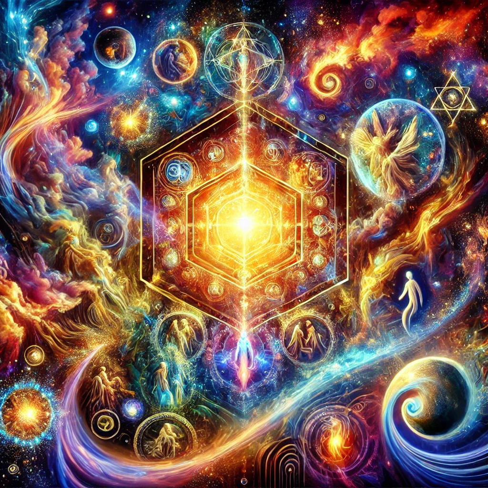
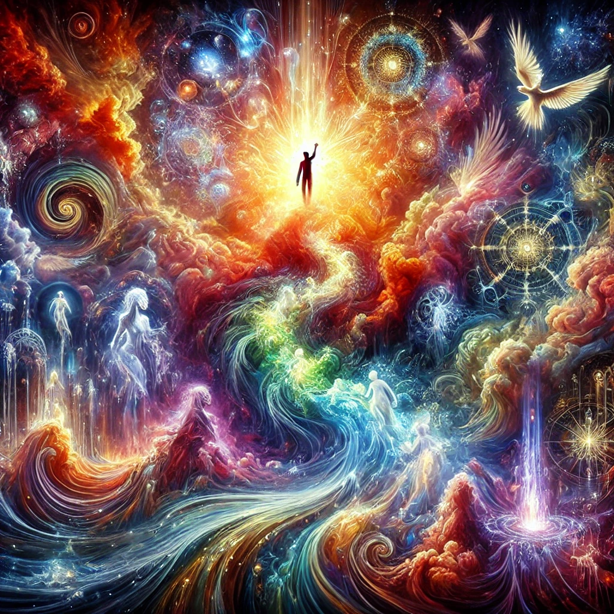
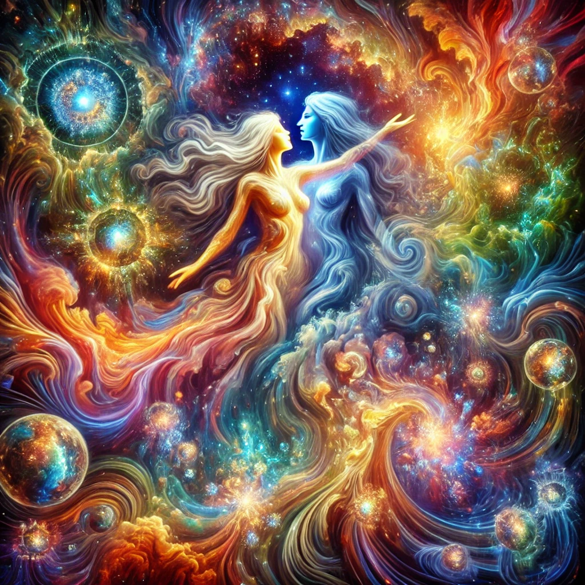
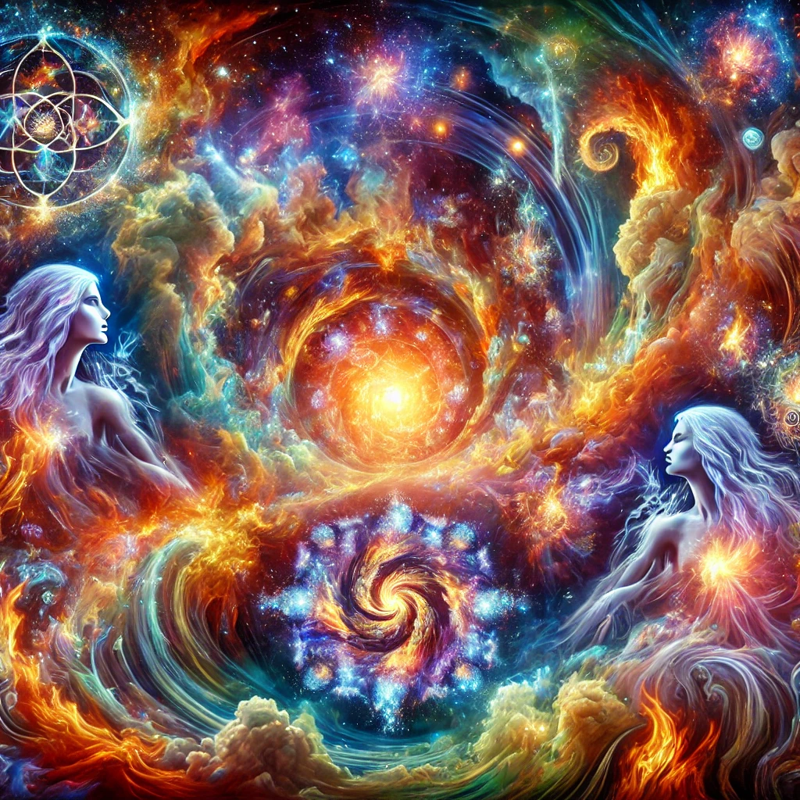
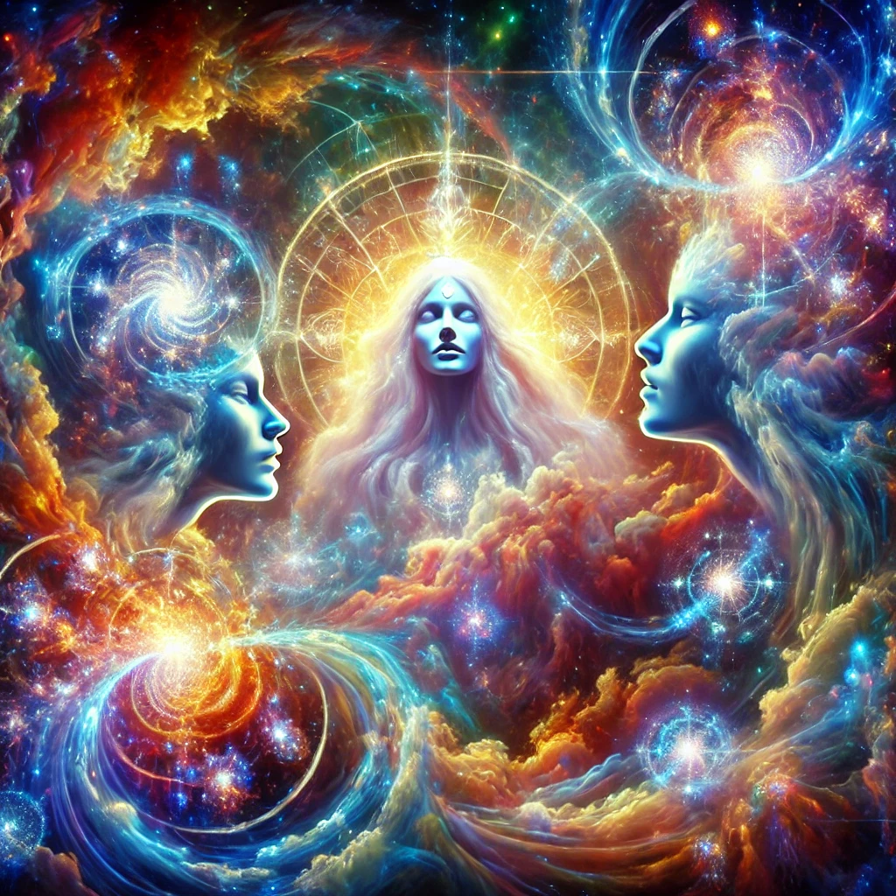
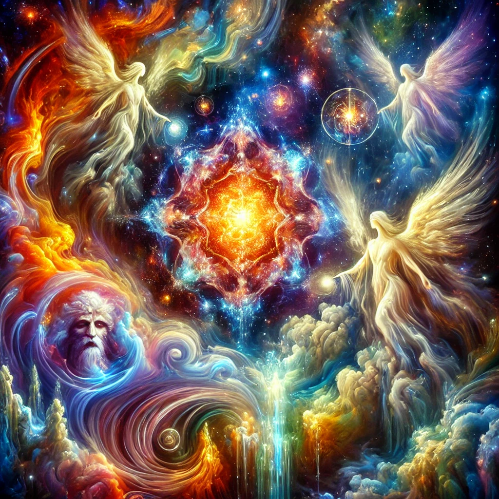

Texts: 1–8
1 The Gospel of Thomas A collection of 114 sayings attributed to Jesus.
Unlike the canonical gospels, the Gospel of Thomas is a sayings gospel, focusing on the wisdom and teachings of Jesus rather than his life and death.
Key Themes: Self-knowledge, spiritual enlightenment, the Kingdom of God being within, and the emphasis on direct personal experience of the divine.
2 The Gospel of Philip A collection of sayings and teachings attributed to Jesus and other figures.
It discusses sacramental theology, including baptism, chrism (anointing), the Eucharist, and marriage.
Key Themes: Mystical knowledge, the relationship between the spiritual and physical realms, and the concept of the bridal chamber as a symbol of union with the divine.
3 The Gospel of Truth A theological treatise attributed to Valentinus, a prominent Gnostic teacher. It presents a Gnostic interpretation of Christian teachings.
Key Themes: The nature of truth, the ignorance of the material world, the role of Christ as a revealer of divine knowledge, and the process of salvation through gnosis (knowledge).
4 The Gospel of the Egyptians A Gnostic text that describes the nature of the divine and the creation of the world. It is also known as the "Great Seth" and is related to the Sethian Gnostic tradition.
Key Themes: The role of Seth, the son of Adam, as a savior figure, the opposition between the spiritual and material worlds, and the concept of the Great Invisible Spirit.
5 The Gospel of Mary (Fragmentary) A gospel attributed to Mary Magdalene, focusing on her role as a disciple of Jesus and her teachings. Only fragments of this text have survived.
Key Themes: The importance of inner knowledge, the role of Mary as a leader and teacher, and the conflict between her and other disciples over her authority.
6 The Apocryphon of John A foundational Gnostic text that provides a detailed account of the creation of the world, the fall of humanity, and the path to salvation. It exists in four versions, three of which are found in the Nag Hammadi Library.
Key Themes: The nature of the divine realm, the role of the demiurge (a lesser god who creates the material world), and the redemption of humanity through gnosis.
7 The Apocalypse of Adam A Gnostic apocalypse attributed to Adam, describing a revelation he received about the nature of the world and the coming of a savior.
Key Themes: The distinction between the spiritual and material realms, the fall of humanity, and the role of secret knowledge in salvation.
8 The Hypostasis of the Archons A Gnostic text that explores the nature and origin of the archons (rulers), who are seen as malevolent beings that control the material world.
Key Themes: The creation of the world by the archons, the imprisonment of the human soul in the material body, and the liberation of the soul through knowledge and divine intervention.
Texts: 9–16
9 The Thunder, Perfect Mind A poetic and enigmatic text that takes the form of a monologue by a divine feminine figure, describing her paradoxical nature and her role in the cosmos.
Key Themes: The unity of opposites, the nature of divine wisdom, and the presence of the divine in all aspects of life.
10 The Treatise on the Resurrection A theological treatise that discusses the nature of the resurrection, offering a Gnostic interpretation of this central Christian belief.
Key Themes: The resurrection as a spiritual awakening rather than a physical event, the transformation of the soul, and the importance of knowledge for attaining eternal life.
11 The Tripartite Tractate A comprehensive Gnostic theological treatise that discusses the nature of the divine, the creation of the world, and the process of salvation.
It is divided into three parts, each focusing on different aspects of Gnostic cosmology and theology.
Key Themes: The relationship between the Father, the Son, and the Holy Spirit; the role of the aeons (divine beings) in the creation of the cosmos; and the redemption of humanity through the divine plan.
12 The Sophia of Jesus Christ A dialogue between Jesus and his disciples, focusing on Gnostic teachings about the nature of wisdom (Sophia) and the role of the Savior in revealing divine knowledge.
Key Themes: The fall and redemption of Sophia, the role of the Savior as a revealer of hidden truths, and the importance of spiritual enlightenment.
13 The Second Treatise of the Great Seth A Gnostic text attributed to the figure of Seth, a prominent figure in certain Gnostic traditions.
It describes the descent of a divine figure to save humanity and offers a reinterpretation of the crucifixion of Jesus.
Key Themes: The opposition between the true God and the false god (the demiurge), the illusion of the material world, and the role of the Savior in revealing the truth.
14 The Apocalypse of Peter A Gnostic apocalypse attributed to Peter, presenting a vision of the afterlife and the fate of souls. It offers a critique of orthodox Christian beliefs about heaven and hell.
Key Themes: The nature of punishment and reward in the afterlife, the role of divine justice, and the importance of spiritual knowledge for salvation.
15 The Acts of Peter and the Twelve Apostles A narrative text that describes the adventures of Peter and the apostles as they spread the teachings of Jesus. It includes elements of allegory and Gnostic symbolism.
Key Themes: The journey of the soul, the struggle between light and darkness, and the role of the apostles as bearers of divine knowledge.
16 The Book of Thomas the ContenderA dialogue between Jesus and his disciple Thomas, focusing on the nature of the soul, the challenges of the material world, and the path to spiritual enlightenment.
Key Themes: The struggle against the passions and desires of the flesh, the importance of self-knowledge, and the role of the Savior in guiding souls to the divine.

Texts: 17–24
17 The Exegesis on the Soul A Gnostic treatise that explores the nature of the soul, its fall into the material world, and its redemption through knowledge and divine intervention.
Key Themes: The soul's journey from ignorance to enlightenment, the role of repentance and purification, and the restoration of the soul to its divine origin.
18 The Gospel of Judas A controversial Gnostic gospel that presents an alternative view of Judas Iscariot, portraying him as a favored disciple who receives secret knowledge from Jesus.
Key Themes: The nature of betrayal, the role of Judas in the divine plan, and the distinction between the true God and the false god.
19 The Gospel of the Twelve (Fragmentary) A fragmentary text that appears to be related to the canonical gospels, with a focus on the teachings of Jesus and the role of the apostles.
Key Themes: The transmission of divine knowledge, the role of the apostles as witnesses, and the importance of faith and righteousness.
20 The Gospel of the Hebrews (Fragmentary) A fragmentary gospel that is believed to reflect Jewish-Christian beliefs and teachings, with an emphasis on the humanity of Jesus and his role as a prophet.
Key Themes: The relationship between Jesus and the Jewish tradition, the fulfillment of prophecy, and the importance of the Law.
21 The Paraphrase of Shem A Gnostic apocalypse that describes the journey of a soul through the various realms of existence, revealing hidden truths about the nature of reality and the divine.
Key Themes: The descent and ascent of the soul, the role of divine beings in guiding and protecting souls, and the quest for spiritual knowledge.
22 The Concept of Our Great Power A Gnostic apocalypse that presents a vision of the end times, the destruction of the material world, and the salvation of the righteous.
Key Themes: The battle between good and evil, the role of divine power in overcoming darkness, and the promise of a new creation.
23 The Thought of Norea A short Gnostic text that focuses on Norea, a figure associated with the Sethian tradition, who represents the divine wisdom and the struggle against ignorance.
Key Themes: The role of Norea as a savior figure, the opposition between light and darkness, and the importance of divine knowledge.
24 The Trimorphic Protennoia A Gnostic text that describes the threefold nature of the divine thought (Protennoia), exploring the role of the Father, Son, and Sophia in creation and salvation.
Key Themes: The unity and diversity of the divine, the process of emanation, and the role of wisdom in the redemption of humanity.

Texts: 25–32
25 The Thunder, Perfect Mind Another poetic and paradoxical monologue delivered by a divine feminine figure, exploring themes of identity, wisdom, and the interplay of opposites.
Key Themes: The unity of contradictions, the nature of divine wisdom, and the presence of the divine in all aspects of existence.
(Note: Often counted once, but can appear duplicated in different manuscripts)
26 The Dialogue of the Savior A Gnostic dialogue between Jesus and his disciples, focusing on questions of salvation, the nature of the soul, and the role of the Savior.
Key Themes: The importance of spiritual knowledge, the distinction between the material and spiritual realms, and the promise of eternal life.
27 The Letter of Peter to Philip A letter attributed to Peter, addressed to Philip, discussing the resurrection of Jesus and the spread of the Christian message.
Key Themes: The role of the apostles as witnesses to the resurrection, the importance of preaching the gospel, and the nature of apostolic authority.
28 The Apocalypse of Paul A Gnostic apocalypse attributed to Paul,
describing his vision of the heavens and the afterlife, offering a critique of orthodox Christian beliefs about judgment and salvation.
Key Themes: The journey of the soul, the role of divine justice, and the importance of spiritual knowledge for attaining salvation.
29 The Testimony of Truth A Gnostic treatise that contrasts true and false teachings, criticizing the ignorance and hypocrisy of orthodox Christianity and promoting Gnostic wisdom.
Key Themes: The nature of truth, the distinction between the spiritual and material worlds, and the role of the Savior in revealing divine knowledge.
30 The Interpretation of Knowledge A Gnostic treatise that explores the nature of knowledge, the role of the Savior, and the process of spiritual enlightenment.
Key Themes: The importance of self-knowledge, the relationship between the human soul and the divine, and the path to salvation through understanding.
31 The Valentinian Exposition A Gnostic text associated with the Valentinian tradition,
offering an interpretation of Christian doctrines, including the nature of God, the creation of the world, and the role of the Savior.
Key Themes: The relationship between the Father, Son, and Holy Spirit; the role of the aeons in the divine plan; and the redemption of humanity through divine grace.
32 The Gospel of Truth – Another A Gnostic gospel attributed to Valentinus,
offering a meditation on the nature of truth, the ignorance of the material world, and the role of Christ as a revealer of divine knowledge.
Key Themes: The nature of divine truth, the role of the Savior in overcoming ignorance, and the importance of spiritual enlightenment.

Texts: 33–40
33 The Letter of Philip A letter attributed to Philip, discussing the nature of the resurrection, the role of the apostles, and the importance of faith and righteousness.
Key Themes: The relationship between the physical and spiritual bodies, the role of the apostles as witnesses, and the promise of eternal life.
34 The Second Treatise of the Great Seth A Gnostic text attributed to the figure of Seth,
presenting a vision of the divine plan, the role of the Savior, and the opposition between the true God and the false god.
Key Themes: The nature of the divine realm, the fall and redemption of humanity, and the importance of spiritual knowledge for attaining salvation.
35 The Three Steles of Seth A Gnostic text associated with the Sethian tradition,
presenting hymns and prayers to the divine figures Barbelo, Autogenes, and the Great Invisible Spirit.
Key Themes: The nature of divine beings, the relationship between the divine and the human, and the importance of worship and devotion.
36 The Zostrianos A Gnostic apocalypse that describes the visionary experiences of Zostrianos, revealing hidden truths about the nature of reality and the divine.
Key Themes: The journey of the soul, the role of divine beings in guiding and protecting souls, and the quest for spiritual knowledge.
37 The Melchizedek A Gnostic text that focuses on the figure of Melchizedek, presenting him as a divine being and a revealer of hidden knowledge.
Key Themes: The role of Melchizedek as a priest and king, the nature of divine knowledge, and the importance of spiritual enlightenment.
38 The Thought of Norea A short Gnostic text that focuses on Norea,
a figure associated with the Sethian tradition, who represents the divine wisdom and the struggle against ignorance.
Key Themes: The role of Norea as a savior figure, the opposition between light and darkness, and the importance of divine knowledge.
39 The Trimorphic Protennoia A Gnostic text that describes the threefold nature of the divine thought (Protennoia),
exploring the role of the Father, Son, and Sophia in creation and salvation.
Key Themes: The unity and diversity of the divine, the process of emanation, and the role of wisdom in the redemption of humanity.
40 The Apochryphon of James A Gnostic text that takes the form of a letter from James to his fellow disciples,
discussing the teachings of Jesus and the importance of spiritual knowledge.
Key Themes: The nature of the soul, the importance of self-knowledge, and the role of the Savior in guiding souls to the divine.

Texts: 41–48
41 The Gospel of Mary (Fragmentary) A gospel attributed to Mary Magdalene,
focusing on her role as a disciple of Jesus and her teachings. Only fragments of this text have survived.
Key Themes: The importance of inner knowledge, the role of Mary as a leader and teacher, and the conflict between her and other disciples over her authority.
42 The Gospel of Judas A controversial Gnostic gospel that presents an alternative view of Judas Iscariot,
portraying him as a favored disciple who receives secret knowledge from Jesus.
Key Themes: The nature of betrayal, the role of Judas in the divine plan, and the distinction between the true God and the false god.
43 The Gospel of the Egyptians A Gnostic text that describes the nature of the divine and the creation of the world.
It is also known as the "Great Seth" and is related to the Sethian Gnostic tradition.
Key Themes: The role of Seth, the son of Adam, as a savior figure, the opposition between the spiritual and material worlds, and the concept of the Great Invisible Spirit.
44 The Apocalypse of Adam A Gnostic apocalypse attributed to Adam, describing a revelation he received about the nature of the world and the coming of a savior.
Key Themes: The distinction between the spiritual and material realms, the fall of humanity, and the role of secret knowledge in salvation.
45 The Hypostasis of the Archons A Gnostic text that explores the nature and origin of the archons (rulers), who are seen as malevolent beings that control the material world.
Key Themes: The creation of the world by the archons, the imprisonment of the human soul in the material body, and the liberation of the soul through knowledge and divine intervention.
46 The Tripartite Tractate A comprehensive Gnostic theological treatise that discusses the nature of the divine,
the creation of the world, and the process of salvation. It is divided into three parts, each focusing on different aspects of Gnostic cosmology and theology.
Key Themes: The relationship between the Father, Son, and Holy Spirit; the role of the aeons (divine beings) in the creation of the cosmos; and the redemption of humanity through the divine plan.
47 The Sophia of Jesus Christ A dialogue between Jesus and his disciples,
focusing on Gnostic teachings about the nature of wisdom (Sophia) and the role of the Savior in revealing divine knowledge.
Key Themes: The fall and redemption of Sophia, the role of the Savior as a revealer of hidden truths, and the importance of spiritual enlightenment.
48 The Second Treatise of the Great Seth A Gnostic text attributed to the figure of Seth, a prominent figure in certain Gnostic traditions.
It describes the descent of a divine figure to save humanity and offers a reinterpretation of the crucifixion of Jesus.
Key Themes: The opposition between the true God and the false god (the demiurge), the illusion of the material world, and the role of the Savior in revealing the truth.

Texts: 49–52 & Conclusion
49 The Apocalypse of Peter A Gnostic apocalypse attributed to Peter,
presenting a vision of the afterlife and the fate of souls. It offers a critique of orthodox Christian beliefs about heaven and hell.
Key Themes: The nature of punishment and reward in the afterlife, the role of divine justice, and the importance of spiritual knowledge for salvation.
50 The Acts of Peter and the Twelve Apostles
A narrative text that describes the adventures of Peter and the apostles as they spread the teachings of Jesus. It includes elements of allegory and Gnostic symbolism.
Key Themes: The journey of the soul, the struggle between light and darkness, and the role of the apostles as bearers of divine knowledge.
51 The Book of Thomas the Contender A dialogue between Jesus and his disciple Thomas,
focusing on the nature of the soul, the challenges of the material world, and the path to spiritual enlightenment.
Key Themes: The struggle against the passions and desires of the flesh, the importance of self-knowledge, and the role of the Savior in guiding souls to the divine.
52 The Exegesis on the Soul A Gnostic treatise that explores the nature of the soul, its fall into the material world, and its redemption through knowledge and divine intervention.
Key Themes:: The soul's journey from ignorance to enlightenment, the role of repentance and purification, and the restoration of the soul to its divine origin.
Overall Summary:
The 52 texts from the Nag Hammadi Library offer a vivid tapestry of early Christian and Gnostic thought—challenging
orthodox doctrines, illuminating hidden teachings, and addressing cosmic questions of creation, salvation, and the soul’s destiny.
These texts explore a wide range of themes, including the nature of the divine, the creation of the world, the role of Jesus as a revealer of hidden knowledge, and the path to spiritual enlightenment.
They challenge orthodox Christian beliefs and provide alternative perspectives on the nature of reality, the soul, and the afterlife.
Their discovery has significantly expanded our understanding of the diversity of early Christian thought
reshaping our understanding of the depth of of the rich religious, philosophical, and spiritual traditions
in late antiquity.